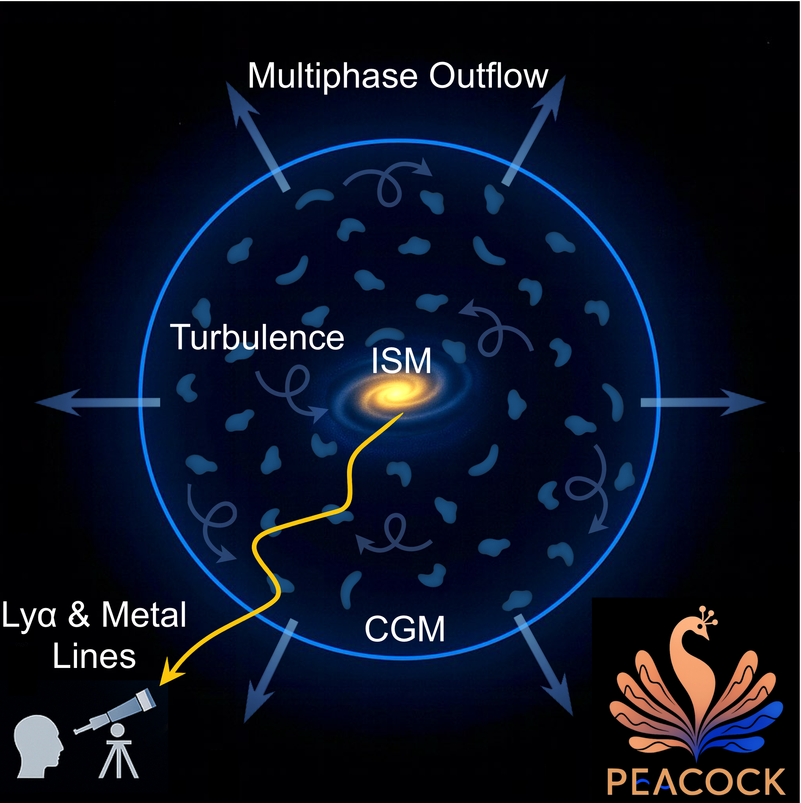
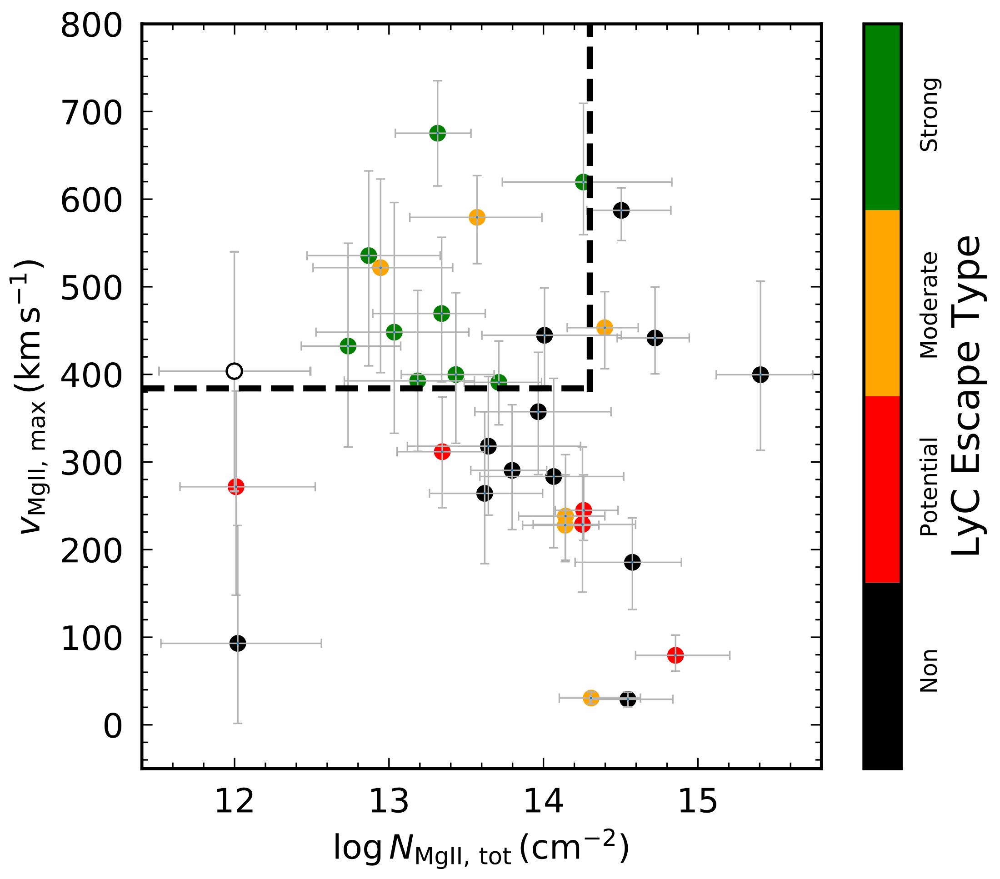
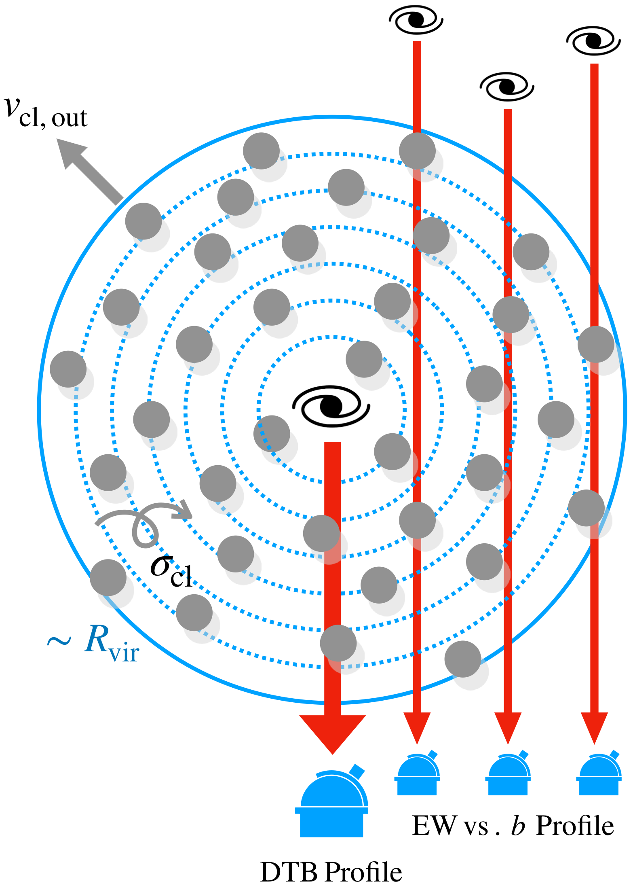
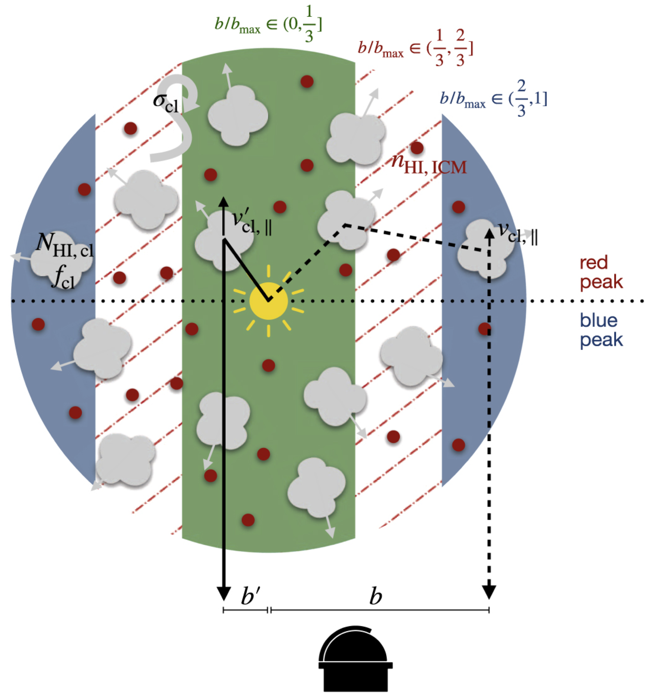
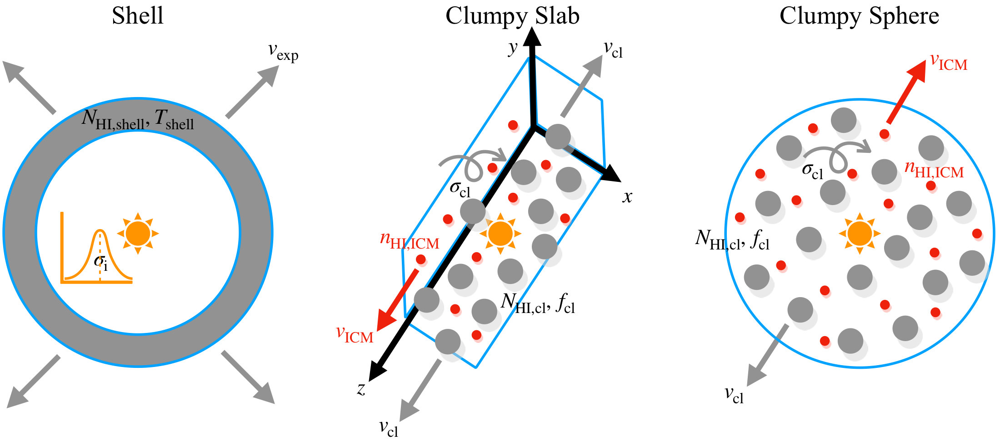
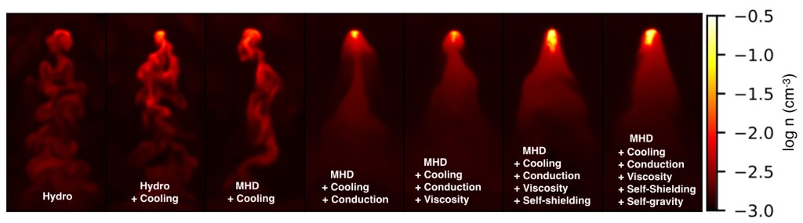
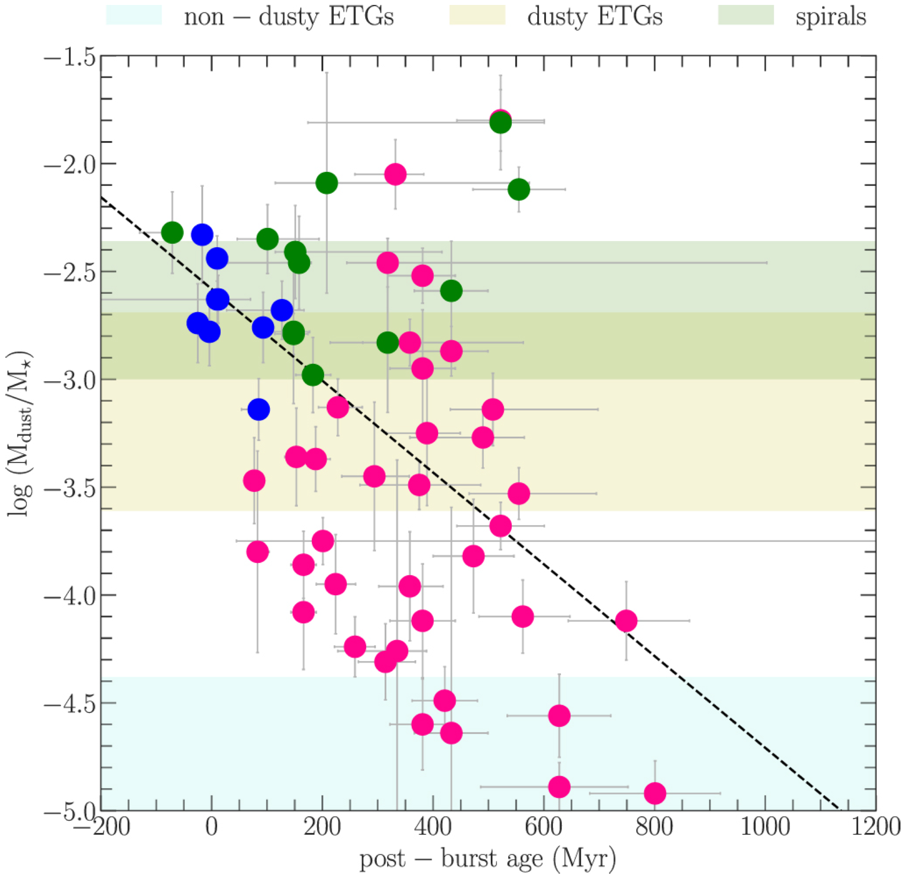

Research
Overview
My research focuses on understanding how galaxies evolve through the complex flows of gas that surround them. Galaxies do not evolve in isolation; they are embedded in vast reservoirs of diffuse gas known as the circumgalactic medium (CGM). This multiphase environment acts as the interface between galaxies and the larger cosmic web, regulating how gas accretes onto galaxies, how feedback-driven winds carry material back into their halos, and ultimately how galaxies grow over cosmic time. A central goal of my work is to uncover the physical processes that shape these gas flows and determine how they influence star formation, chemical enrichment, and the long-term evolution of galaxies.
To address these questions, I develop physically motivated models and radiative-transfer (RT) frameworks that connect theoretical descriptions of multiphase gas to detailed spectroscopic observations. Much of my research focuses on interpreting Lyα and ultraviolet metal emission and absorption lines, which encode rich information about the structure, kinematics, and physical conditions of galactic outflows and the CGM. I combine analytical modeling, Monte Carlo RT simulations, and comparisons with spatially resolved observations from instruments such as HST/COS and KCWI to extract physical constraints from these complex spectral signatures.
A central component of my recent work is the development of PEACOCK, a three-dimensional Monte Carlo RT framework that jointly models Lyα and multiple UV metal lines within a unified multiphase outflow model. Applied to deep UV spectra of nearby galaxies, this framework reveals how ion column densities, bulk outflows, and turbulent motions shape observed line profiles and the energetics of galactic winds. Complementary work using the ALPACA framework and related RT models has further explored how metal absorption lines, Mg II emission, and Lyα halos trace the structure and dynamics of clumpy multiphase gas around galaxies.
More broadly, my research seeks to build a physically grounded picture of how multiphase gas flows regulate galaxy evolution. By linking RT diagnostics, hydrodynamic simulations, and spectroscopic observations, I aim to reveal how inflows, outflows, turbulence, and cloud survival in the CGM govern the life cycle of baryons in galaxies, from nearby star-forming systems to the early universe.
Highlights
-
PEACOCK: Multi-Ion Radiative Transfer of Galactic Winds
In Li et al. (2026a) and Li et al. (2026b), I developed PEACOCK, a 3D Monte Carlo RT framework that jointly models Lyα and multiple UV metal lines in a unified multiphase outflow model. Applied to deep HST/COS spectra of 50 nearby galaxies, PEACOCK shows how ion column densities, bulk outflows, and turbulent motions shape observed line profiles and the energetics of galactic winds.

Schematic of the multiphase, clumpy radiative-transfer model PEACOCK, in which Lyα and UV metal-line photons emitted by a central star-forming galaxy propagate through a halo populated by outflowing, turbulent gas clumps in the circumgalactic medium (Li et al. 2026a).
-
Mg II and Lyα Radiative Transfer in LyC-Leaking Galaxies
In Li et al. (2025), I performed systematic RT modeling of Mg II emission in 33 low-redshift Lyman-continuum-leaking galaxies using a multiphase, clumpy CGM model. The analysis identified two key indirect tracers of strong LyC escape: high Mg II clump outflow velocities and low Mg II column densities.

Relation between clump outflow velocity and Mg II column density from Mg II RT modeling of LyC-leaking galaxies, showing that strong LyC escape occurs preferentially in systems with high Mg II outflow velocities and low Mg II column densities (Li et al. 2025).
-
Metal-Line Diagnostics of Multiphase Outflows
In Li et al. (2024), I developed ALPACA, a semi-analytic RT framework for modeling UV metal absorption lines arising from clumpy, turbulent galactic environments. The model links observed low-ionization absorption profiles to the physical structure and kinematics of multiphase outflows, enabling constraints on cloud covering fractions, velocity fields, and turbulent motions in the CGM.

Schematic of ALPACA, a non-Sobolev, semi-analytic RT framework for metal absorption lines that models both down-the-barrel galaxy spectra and off-sightline absorption (e.g., EW vs. impact parameter) to probe the structure and kinematics of multiphase outflows (Li et al. 2024).
-
Spatially Resolved Lyα Halo Modeling
In Li et al. (2021), Li et al. (2022), and Erb et al. (2023), I modeled spatially resolved Lyα spectra in extended halos using RT simulations and KCWI observations. These studies showed how variations in Lyα line profiles across halos arise from scattering in multiphase gas with both outflowing and inflowing components, supporting a "central powering + scattering" origin of Lyα halos.

Schematic showing Lyα photon escape from a clumpy multiphase CGM at different impact parameters, illustrating that photons escaping at larger impact parameters encounter lower H I column densities due to decreasing clump covering fraction at large radii and experience smaller projected outflow velocities along their paths (Erb et al. 2023).
-
Lyα Radiative Transfer in Clumpy Multiphase Media
In Li & Gronke (2022), I investigated how Lyα spectra emerging from clumpy multiphase media relate to commonly used shell-model fits. By performing RT calculations in physically motivated CGM geometries, this work clarified why simple shell models often reproduce observed Lyα spectra and how their parameters relate to the underlying gas structure and kinematics.

Schematic comparing the Lyα shell model with multiphase clumpy CGM models, emphasizing that shell-model parameters inferred from spectral fitting should be interpreted as effective representations of radiative transfer in a realistic clumpy medium rather than literal physical quantities (Li & Gronke 2022).
-
Cool Cloud Survival in the Circumgalactic Medium
In Li et al. (2020), I performed a large suite of hydrodynamic simulations of cool clouds interacting with hot halo gas and identified distinct cloud-evolution regimes. The work established scaling relations for cloud survival times and clarified the conditions under which cool CGM structures can persist in galactic halos.

Density slices from simulations of a cool cloud moving through a hot wind, showing how radiative cooling, magnetic fields, thermal conduction, viscosity, and self-shielding influence the evolution and survival of multiphase CGM clouds (Li et al. 2020).
-
Interstellar Medium Evolution in Post-Starburst Galaxies
In Li et al. (2019), I investigated how the dust and molecular gas content of post-starburst galaxies evolve after the shutdown of intense star formation. Using multiwavelength observations of 58 systems, the study showed that both dust and molecular gas decline over time while star formation decreases even more rapidly, indicating that quenching is associated with a reduction in star-forming efficiency rather than simply the removal of gas.

Specific dust mass versus post-burst age for post-starburst galaxies, showing a clear decline in dust content over time and implying a dust depletion timescale of ≈200 Myr, comparable to the molecular gas depletion timescale (Li et al. 2019).